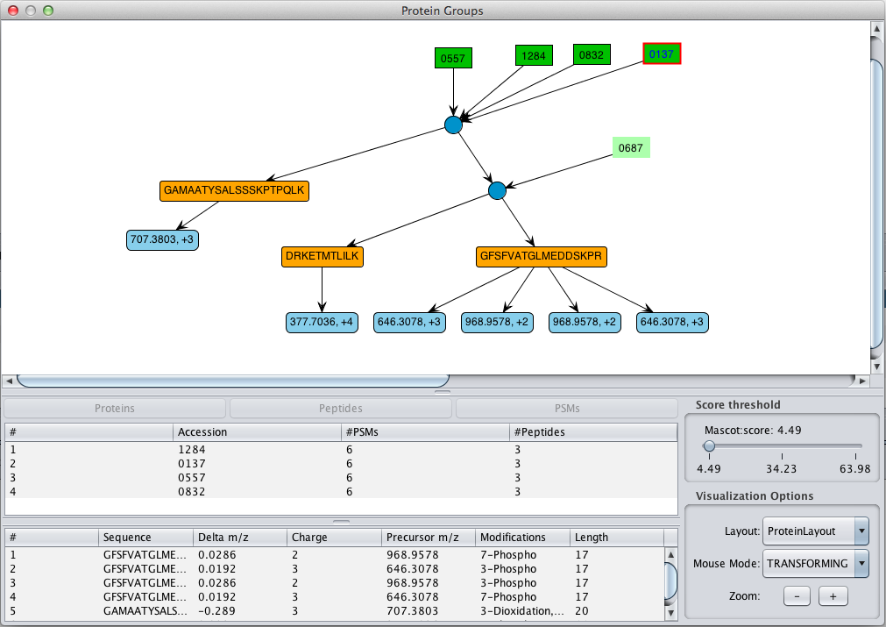

| Previous | Next | See Also |
The Protein Tab provides a protein identification centric view. When protein group information is present, the information is shown in a tree table view. Each protein groups is represent by an anchor protein . If the user click in the icon the three table is expanded and all the proteins in group are shown.
When MS/MS spectra are searched against a sequence database, we are matching peptides, not proteins. In most cases, the matched peptides will not be unique to a single protein. Yet, we usually want to know which proteins were present in the sample. So, we are faced with the challenge of protein inference: given a set of peptide matches, which proteins do we believe were present in the sample? The usual approach is based on the "Principle of Parsimony". We report the minimum set of proteins that account for the observed peptide matches. If we had four peptide matches, two of which occurred in protein A and two in protein B but all four were found in protein C, we would report that protein C had been identified. Proteins A and B might be listed as "sub-set" proteins. It is perfectly possible that our sample actually contained a mixture of proteins A and B, but there is no evidence for this.
If the protein group is present the "Show Protein Group" button will be enable below the protein table in the 'Protein Panel'. The Protein Group Visualization shows a graph view of the protein inference information
for a particular protein group; it shows the protein evidences, the shared peptides, and the psms.
